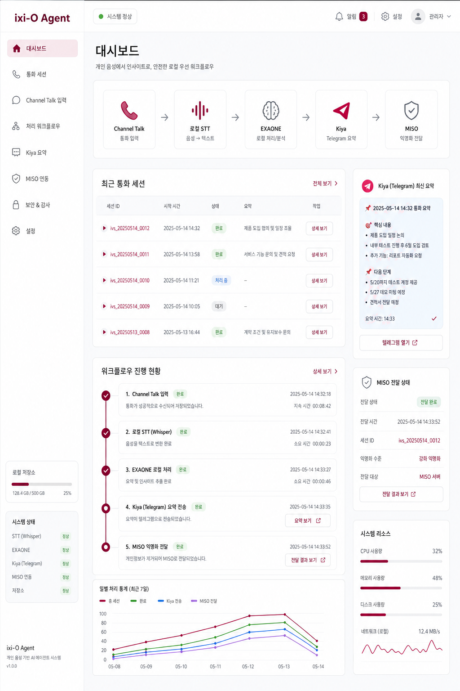

채널톡 데이터는 로컬 처리 후 마스킹
일상의 Voice를 에이전트와 함께
통화·회의를 로컬 STT/EXAONE으로 처리하고, 검수된 payload만 MISO와 Kiya에 전달합니다.
Local first
Review gate
Agent-ready
Experience mode
enterprise / personal

개인 음성은 전체 맥락을 에이전트에게
Whisper STT와 EXAONE 요약을 Mac mini에서
FriendliAI는 필요할 때만 가속 경로로
TDS-inspired system
명확한 상태, 조용한 보조 액션, 리스트 중심의 정보 전달
TDS UI Kit 자산은 복제하지 않고, 공개 문서의 컴포넌트 원칙을 ixi-O Agent의 자체 토큰과 컴포넌트 규칙으로 옮겼습니다.
Button hierarchy
Primary
주요 진행은 fill 버튼, 보조 탐색은 weak 버튼으로 분리합니다.
Status badge
Reviewed
로컬 처리, 검수, 전달 가능 여부를 짧은 상태 값으로 표시합니다.
ListRow handoff
Ready
전사문 원본, 요약, 마스킹 payload를 좌측 맥락과 우측 상태로 읽게 합니다.
체험 플로우
기업용과 개인용을 나눠 큰 단계만 따라가며 완료 상태를 확인합니다.
Channel Talk + n8n webhook
채널톡에서 들어온 고객 음성을 로컬에서 정리
Channel Talk 전화/녹음 데이터는 Mac mini M4 로컬 서버에서 처리하고, 개인정보를 마스킹한 뒤 결정 사항만 에이전트 폴더로 넘깁니다.
25%
수집 완료
기업용 current step
채널톡 입력 수집
source/channel-talk.payload.json
채널톡에 남은 통화/상담 데이터를 n8n webhook으로 받고, 누락 대비 polling/manual backfill을 같은 저장 계약으로 맞춥니다.
privacy boundary
raw audio/transcript local only
transcript policy
원문은 로컬 저장소에만 유지
agent handoff
masked decisions only
Agent-readable payload
source id, call time, customer thread id
두 가지 사용 경로
입력과 보안 정책은 다르지만, 저장 계약과 에이전트 handoff는 같은 구조를 씁니다.
기업용
- Input
- Channel Talk
- Processing
- Mac mini M4 local server
- AI
- Whisper STT + EXAONE summary
- Privacy
- PII masking, decision-only handoff
- Output
- Kiya action proposal / MISO custom tool payload
개인용
- Input
- Local recorder or voice file
- Processing
- Private local processing
- AI
- Whisper STT + EXAONE full-context summary
- Privacy
- No masking by default
- Output
- Full transcript + summary to personal agent
FriendliAI 검토
로컬 우선 구조는 유지하고, hosted inference가 필요해지는 순간에만 API 키를 받습니다.
기본값은 로컬
대회 데모와 실제 개인 사용의 기본 경로는 Mac mini M4에서 Whisper와 EXAONE을 직접 돌리는 구조입니다.
FriendliAI는 선택형 가속 경로
로컬 추론이 느리거나 안정적인 hosted GPU가 필요할 때, OpenAI-compatible endpoint로 EXAONE/Whisper 경로를 붙일 수 있습니다.
기업용은 masked payload만
FriendliAI를 쓰더라도 기업용 원문 통화와 개인정보는 보내지 않고, 마스킹된 요약 또는 명시 승인된 샘플만 보냅니다.
API 키 필요 시점
지금 페이지와 로컬 플로우 목업 구현에는 키가 필요 없습니다. 실제 FriendliAI hosted STT/LLM 호출을 붙일 때 FRIENDLI_TOKEN 또는 Friendli Personal API Key를 로컬 .env.local에만 입력하면 됩니다.
제출에서 보여줄 메시지
같은 제품 안에서 기업용 보안 플로우와 개인용 전체 맥락 플로우를 분리해, 심사위원이 실제 사용 장면과 확장 방향을 한 화면에서 확인하도록 합니다.
- LG U+ Track: Voice AI 입력과 EXAONE 활용이 체험 플로우의 핵심 단계에 드러납니다.
- Security: 기업용은 raw audio/transcript를 로컬에 두고, 개인정보 마스킹 뒤 결정 사항만 전달합니다.
- Personal Mode: 사용자가 원하면 마스킹 없이 전체 맥락을 개인 에이전트에게 넘깁니다.
- MISO Track: 직접 push가 아니라 custom tool/OpenAPI로 안전한 inbound voice context를 제안합니다.